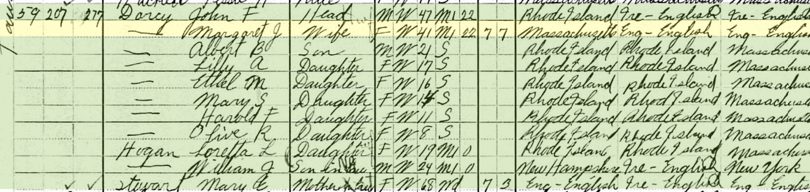
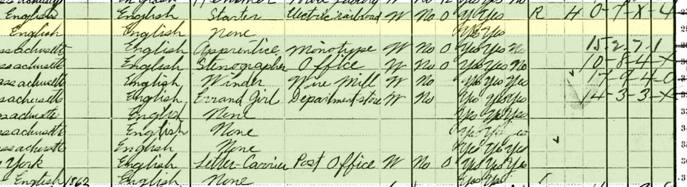

1910 U.S. census: the Darcys of East Providence, with Margaret’s mother, the widow Mary E. Stewart
1910 United States Federal Census, East Providence, Providence County, Rhode Island, ED 99, sheet 12A (Ancestry collection 7884, record 156895093, image 4450037_00468; NARA T624)


The original record, as it appears in the register or index.
What this document is
The United States census. A census taker went door to door and wrote down every person in each household, with age, birthplace and work.
What it says
1910 census, East Providence town, enumeration district 99, sheet 12A, dwelling 207, family 277, enumerated in April 1910. John F. Darcy, head, 47, married 22 years, born Rhode Island, father born Ireland, mother born England (as written), starter, electric railroad. Margaret J., wife, 41, married 22 years, mother of 7 children, 7 living, born Massachusetts, both parents born England. Children: Albert B., son, 21, apprentice, monotype; Lilly A., daughter, 17, stenographer, office; Ethel M., daughter, 16, winder, wire mill; Mary S., daughter, 14, errand girl, department store; Harold F., 11 (written “daughter” in error); Olive R., daughter, 8. Loretta L. Hogan, daughter, 19, married under a year, and her husband William J. Hogan, son-in-law, 24, born New Hampshire, letter carrier, post office. Mary E. Stewart, mother-in-law, 68, widowed, mother of 7 children with 3 living, born England, father born Ireland, mother born England, came to the United States in 1862. This is the record that ties the name Stewart to Margaret: her mother lived with her in 1910 as Mrs. Mary E. Stewart, a widow. (A member tree on Ancestry calls her Mary Elizabeth Regan, 1842–1916; that is not a record.)
Place
East Providence, Rhode Island
How it was read
proven